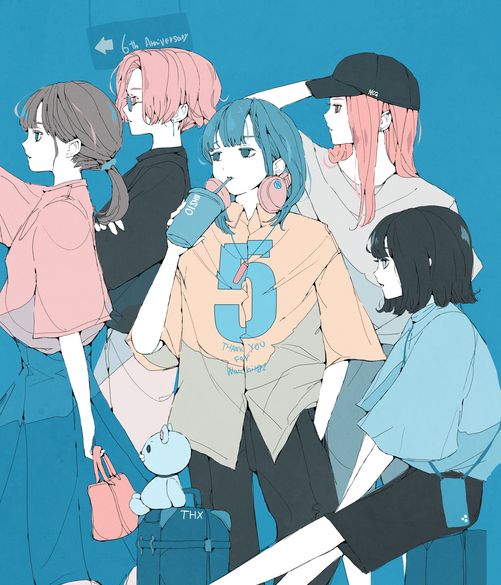

Atcoder diff600~700 問題
- D - Yet Another Recursive Function(diff:606)
- D - Money in Hand(diff:607)
- D - Do use hexagon grid(diff:612)
- C - Simple path(diff:625)
- D - Divide by 2 or 3(diff:645)
- D - Happy New Year 2023(diff:658)
- D - Change Usernames(diff:663)
- C - Connect 6(diff:664)
- C - Chinese Restaurant(diff:676)
- C - Robot Takahashi(diff:678)
- D - Trophy(diff:687)
Atcoder diff700~800 問題
- D - Flip Cards(diff:720)
- D - Neighbors(diff:726)
- D - Count Interval(diff:726)
- C - Invisible Hand(diff:727)
- D - Iroha and Haiku (New ABC Edition)(diff:727)
- D - Longest X(diff:745)
- D - Find by Query(diff:763)
- D - Freefall(diff:766)
- D - Shift vs. CapsLock(diff:778)
- E - 2xN Grid(diff:792)
- D - Match or Not(diff:796)
Atcoder diff800~900 問題
Atcoder diff900~1000 問題
- D - Index A(Not Continuous ver.)(diff:864)
- D - AABCC(diff:908)
- D - Robot Arms 2(diff:916)
- D - Three Days Ago(diff:939)
- D - Writing a Numeral(diff:943)
- D - Circumferences(diff:947)
- E - Family and Insurance(diff:957)
- D - Count Bracket Sequences(diff:964)
- E - Good Graph(diff:971)
- E - Isolation(diff:988)
- E - Grid Filling(diff:996)
- D - M<=ab(diff:999)
Nocopyrightgirl Gallery
